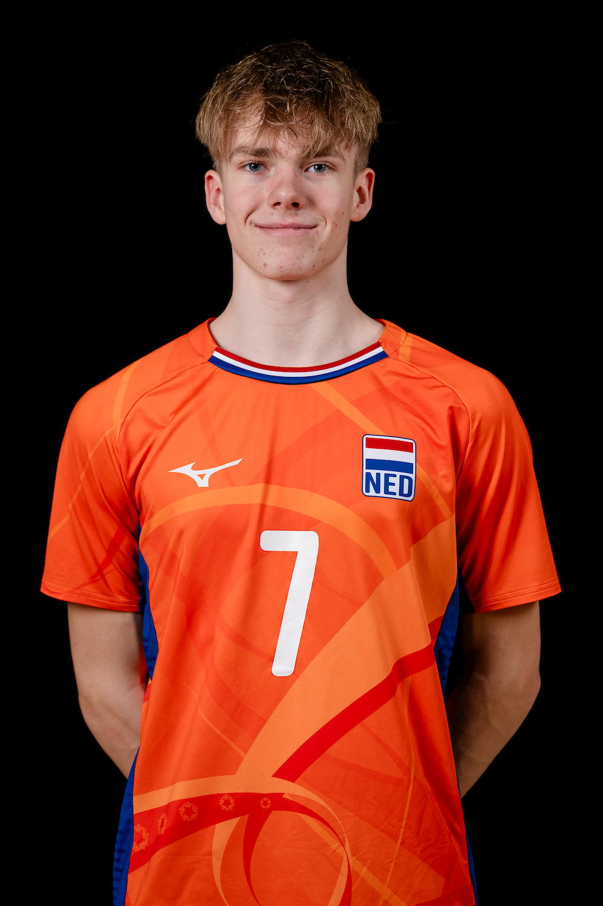

Jenten Noordzij
Hallo! Ik ben Jenten Noordzij. Ik ben 16 jaar oud en ik ben de fotograaf achter NoordzijMaaktFoto's. Ik maak graag foto's van het volleyballen en ik vind het leuk om mensen blij te maken met mijn foto's. De actie en emotie van het volleyballen vastleggen is iets waar ik eigenlijk altijd bezig mee ben geweest. Ik vind het super leuk om te zien dat de sport groter wordt en zeker als er dan een groot toernooi is, om zo veel mensen bij elkaar te zien voor een spelletje!
Op deze site publiseer ik de foto's die ik heb gemaakt voor spelers, teams en toernooien! Wil jij nou ook foto's van jouw wedstrijd of toernooi? Neem dan contact met mij op!
Neem Contact op met mij!